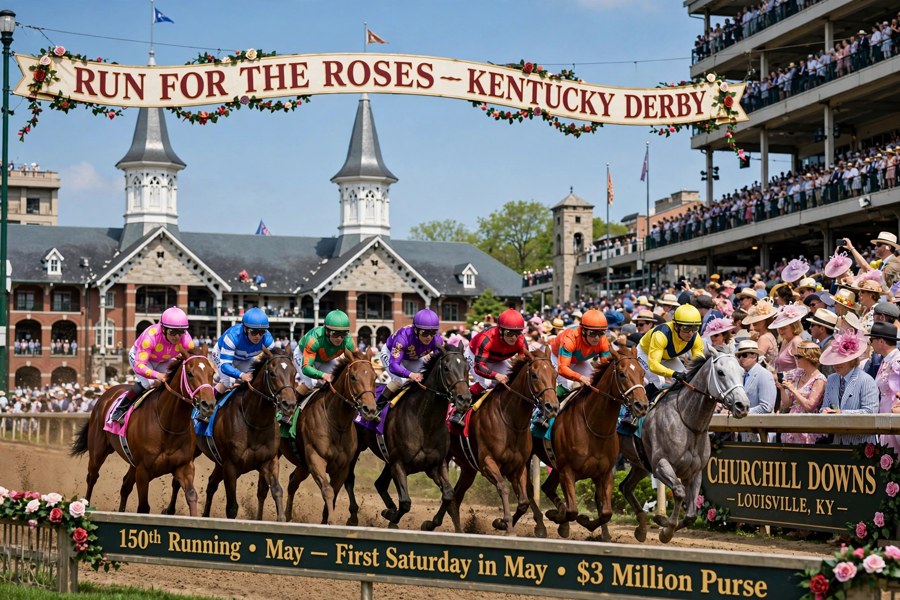

Kentucky Derby

The Kentucky Derby is a horse race held annually in Louisville, Kentucky, on the first Saturday in May, capping the two-week-long Kentucky Derby Festival. The competition is a Grade I stakes race for three-year-old Thoroughbreds at a distance of 1¼ miles at Churchill Downs. It is the first leg of the American Triple Crown, followed by the Preakness Stakes and the Belmont Stakes.
History
The Derby was first run on May 17, 1875, organized by Colonel Meriwether Lewis Clark Jr., who had modeled the race on England's Epsom Derby after travels in Europe. Fifteen three-year-olds contested the inaugural running before a crowd of about 10,000; the winner was Aristides, ridden by Oliver Lewis. Originally run at 1½ miles, the race was shortened to its present distance in 1896. Churchill Downs' iconic twin spires, added in 1895, became the race's symbol.
Traditions
Known as "the Run for the Roses," the Derby drapes its winner with a garland of red roses, a tradition dating to the 1890s. Its signature drink is the mint julep, and the crowd traditionally sings "My Old Kentucky Home" as the horses parade to the post. It is also called "the most exciting two minutes in sports." Famous winners include Secretariat (1973), whose 1:59⅖ finish remains the track record; Seattle Slew (1977); American Pharoah (2015), who ended a 37-year Triple Crown drought; and Justify (2018). Qualifying runs through the "Road to the Kentucky Derby" points system, which caps the field at 20 starters.
Attendance and significance
The Derby routinely draws crowds exceeding 150,000, among the largest in American sport, and anchors an enormous betting handle and television audience. Fillies (females) may compete but rarely do; only three have won: Regret (1915), Genuine Risk (1980), and Winning Colors (1988).